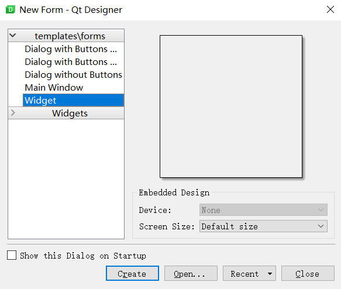
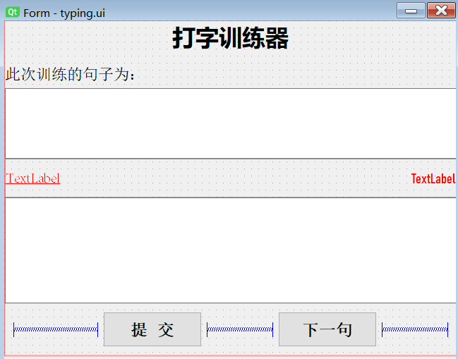
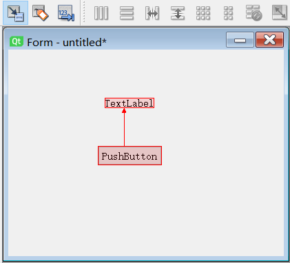
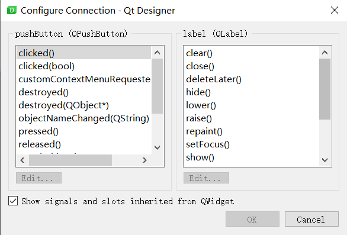
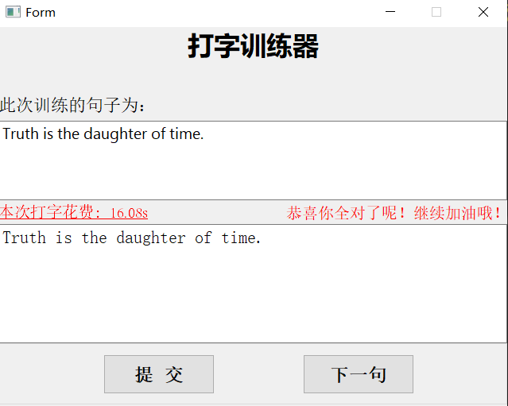
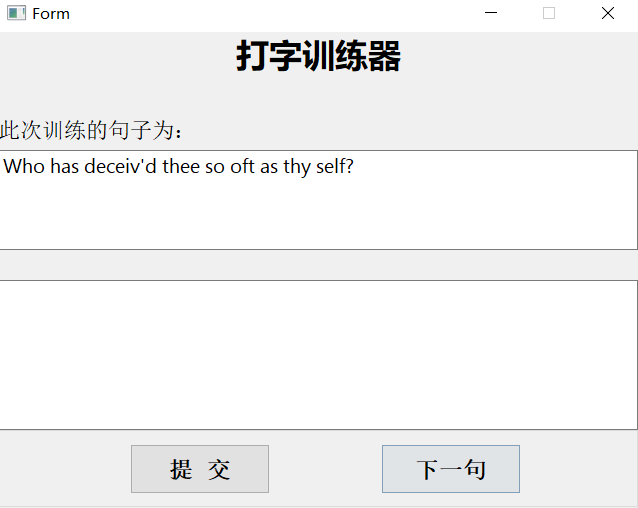

原文连接:https://www.cnblogs.com/TM0831/p/11481198.html
一、写在前面
说道程序员，你会想到什么呢？有人认为程序员象征着高薪，有人认为程序员都是死肥宅，还有人想到的则是996和 ICU。
别人眼中的程序员：飞快的敲击键盘、酷炫的切换屏幕、各种看不懂的字符代码。
然而现实中的程序员呢？对于很多程序员来说，没有百度和 Google 解决不了的问题，也没有 ctrl + c 和 ctrl + v 实现不了的功能。
那么身为一个程序员，要怎么让自己看起来更加“专业”呢？答案就是加快自己的打字速度了，敲的代码可能是错的，但这个13却是必须装的！
然而还是有不少人打字不那么快的，可能就需要训练下了，但是既然身为程序员，为何不自己写一个训练打字的小工具出来呢？
二、基本思路
使用 PyQT5 开发 GUI，实现显示句子并让用户输入，然后将输入的内容和给出的句子进行比对，同时记录所用的时间，最后将正确率输出来。为了能够持续打字输入，还需要做一个“下一句”的功能。在实现了这两个基本的功能后，一个简单的打字训练小工具就做出来了。
三、界面设计
1.环境配置
PyQT5 的开发环境配置在上一篇博客中已经说过了，因而这里不再赘述，如果不清楚的可以点这里查看。
2.界面设计
要进行界面设计，得先打开 QtDesigner，然后新建项目，选择 Widget：

然后就往里面拖控件就好了，这还是很方便的，主要用的控件包括 Label、Text Edit、Push Button等，双击控件之后可以在右侧修改控件的各种属性。最终设计出的界面如下：

3.生成 Python 代码
在设计完界面之后，将生成的结果保存下来，会得到一个 .ui 为后缀的文件。这个文件我们还是无法直接使用的，需要转变成 Python 代码才行。此时就需要使用 pyuic5 命令了，不懂的可以点这里查看我的上篇博客。
四、槽函数
1.槽函数简介
要进行功能设计，就得先知道槽函数。槽是普通的 C++ 成员函数，槽在 Qt 开发软件中是一个很重要的概念，在 Qt 里与信号连接的就是槽，我们一般称之为槽函数。
在使用信号的时候，有四个参数：
1）sender：发出信号的对象；
2）signal：发送对象发出的信号；
3）receiver：接收信号的对象；
4）slot：接收对象在接收到信号之后所需要调用的函数（槽函数）。
2.使用方法
（1）第一种方法
第一步，在 QtDesigner 中点击 “Edit Signals/Slots”，然后左键点击按钮后将鼠标拖到另一个 Label 上：

第二步，在弹出的设置框中选择具体的方法及功能。

这样做很简单，但是也有缺陷，问题在于不能自定义方法，只能使用给定的方法。
（2）第二种方法
在右下角找到 “Signal/Slot Editor” 并点击，然后就可以点击 “+” 创建信号了。

这种方法能够让我们自定义了，但是也不算方便，尤其是当你不知道具体要实现什么方法的时候。
（3）第三种方法
使用 connect() 方法，传入的参数为一个方法名称。例如：
btn.clicked.connect(func)
五、功能实现
1.继承函数
使用 pyuic5 生成 py 文件中定义了一个 Ui_Form 类，其中包含了对各种控件的定义等，如果我们要增加其他功能，且直接在这个 py 文件中修改的话，那么之后要更新界面之类的就不会不方便了，所以最好的方法是继承 Ui_Form 类，然后在继承类中添加修改。参考代码如下：
1 import sys
2 from PyQt5 import QtWidgets
3 from typing.ui import Ui_Form
4
5
6 class MyForm(Ui_Form, QtWidgets.QWidget):
7 def __init__(self):
8 super(MyForm, self).__init__()
9 self.setupUi(self)
10
11
12 if __name__ == '__main__':
13 app = QtWidgets.QApplication(sys.argv)
14 my_form = MyForm()
15 my_form.show()
16 sys.exit(app.exec_())2.隐藏显示控件
有时候我们可能会需要将某些控件隐藏起来，这里简单介绍几种方法。
1）setHidden(bool) 设置控件是否隐藏；
2）hide() 隐藏控件；
这两种隐藏的方法会完全隐藏控件，即不保留控件所占的位置。但如果要保留位置的话，可以使用下面这种方法：
# 将透明度设置为0，达到隐藏且保留位置的目的
op = QtWidgets.QGraphicsOpacityEffect()
op.setOpacity(0)
self.lable.setGraphicsEffect(op)
3.判断输入内容
这一功能的实现需要在点击“提交”按钮时获取输入框中的内容，再和给出的文本进行对比，最后将结果返回显示出来。
1 def click(self):
2 """
3 点击按钮时调用
4 :return:
5 """
6 self.get_time()
7 the_input = self.textEdit.toPlainText()
8 # 计算准确率
9 count = 0
10 for i in range(len(the_input)):
11 if the_input[i] == self.text[i]:
12 count += 1
13 accuracy = count / len(self.text) * 100
14 # print(accuracy)
15 self.show_label()
16 # 设置提示信息
17 info = "有点可惜，你的正确率是: %.2f%% " % accuracy if accuracy != 100 else "恭喜你全对了呢！继续加油哦！"
18 self.info_lable.setText(info)对于我这种懒人来说，点击按钮这种操作都是费力的，所以最好加入一个快捷键，这样就方便多了，可以使用如下方法设置：
# 设置快捷键
self.submit_btn.setShortcut('ctrl+e')
六、运行结果
最终运行结果的截图如下：

提交之后还可以点击下一句继续训练：

完整代码已上传到 GitHub！